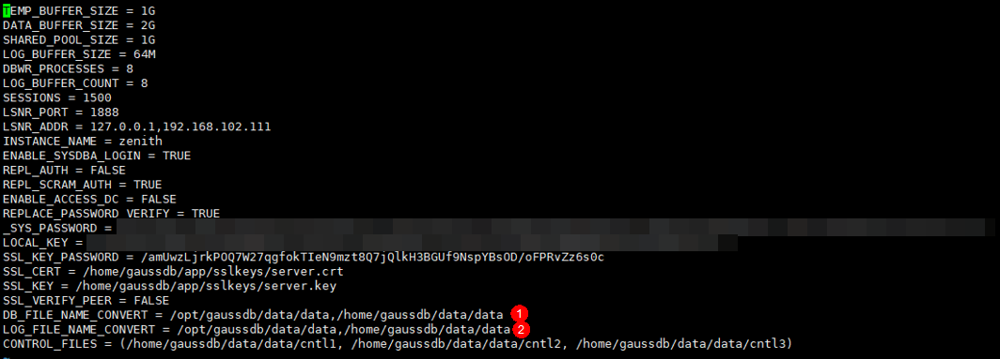

Symptom
The restoration of GaussDB T deployed in single-node mode fails. An event is displayed as follows: The installation directory of backuped single server({0}) is different from the target single server for restoration({1}). Ensure that DB_FILE_NAME_CONVERT and LOG_FILE_NAME_CONVERT are configured in the zengine.ini configuration file. Refer to OceanProtect Backup Appliance Troubleshooting or contact technical support engineers.
Possible Cause
The installation directory of the single-node system where the backup copy resides is different from that of the target single-node system for restoration.
Procedure
- Log in to the target single-node system and run the following commands in sequence to access the window for editing the configuration file:
su - omm cd $GSDB_DATA/cfg vi zengine.ini
- Edit the values of DB_FILE_NAME_CONVERT and LOG_FILE_NAME_CONVERT. If the parameters do not exist, add them to the configuration file. For details, see the following figure. The following is an example of changing the parameter values:
DB_FILE_NAME_CONVERT = {0}/data,{1}/data LOG_FILE_NAME_CONVERT = {0}/data,{1}/data
{0} and {1} in the parameter values correspond to {0} and {1} in the restoration failure event, respectively.
The following figure shows an example of the configuration file.

- Save the edited content and perform the restoration job again.